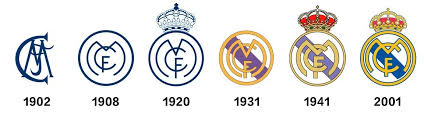

地址：中山大学南方学院
联系人：龙霆，黄栋铧，钟义堤
龙霆电话：020-xxxxxxx
黄栋铧电话2：020-xxxxxxx
钟义堤电话3：020-xxxxxxx
QQ 1：2910716945
QQ 2：1029109792
QQ 3：1583181483
邮编：510900
皇马文化 发布人:钟xx 发布时间：2019-04-25 23:25:28
球队队徽进化史
 1902年皇马诞生了第一个队徽，一群喜爱足球这项刚刚出现在大不列颠岛的体育运动的人于1902年3月6日成立了马德里足球俱乐部。最初的队徽由象征俱乐部名称的首个大写字母组成，白色的背景配上海军蓝色的字母M、C、F。 为了参加官方组织的正式比赛，根据当时对体育组织的要求，马德里足球俱乐部必须在队徽上加入马德里市的市徽（左），所以马德里足球俱乐部的队徽就变成了圆形（右，蓝色），但是这很容易和市徽搞混。 [58] 从1908年开始，马德里足球俱乐部的队徽进行了修改并获得了真正意义上的队徽。 在新的队徽上依旧保留了象征俱乐部名称的大写字母，但是这其中字母M的写法却变得别具风格，由于M代表着马德里，所以把它的写法变成了醒目的圆形。整体来看队徽的颜色没有改变，依旧是白色的底色映衬着海军蓝色的图案。 1920年皇马的队徽成功“加冕”。西班牙国王阿方索八世于1920年6月29日授予了马德里足球俱乐部“皇家”的字样，于是在他们的队徽上就出现了一顶皇冠。此外，三个象征着俱乐部名称的字母也轻微地改变了位置，M被稍稍挪向左边并拉得更长。 为了参加官方组织的比赛，皇家马德里足球俱乐部只能继续使用马德里市的市徽，不过在市徽上他们依旧可以加上皇冠的图案。 1931年西班牙共和国时期事过境迁，西班牙国王被流放，1931年4月14日成立了西班牙共和国，于是所有带有君主制象征的标志统统被禁止了，于是俱乐部队徽上的皇冠图案也消失了，球队的名称再次变成了“马德里足球俱乐部”。与此同时，俱乐部的队徽上还加上了一条象征着卡斯蒂利亚地区的绶带。 1941年“皇家”字样再次出现，西班牙内战结束以后，社会制度再次变更，皇冠的图案则再次出现在俱乐部的队徽上。队徽的颜色也作出了调整，金黄色替代了以前的海军蓝色。这个版本的队徽一直沿用到2001年。 到了2001年，皇家马德里俱乐部再一次对俱乐部队徽做了细微的改动，就成了今天我们看到的皇马队徽。